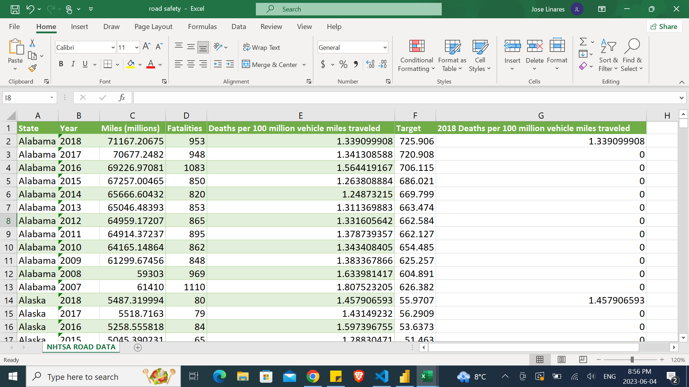
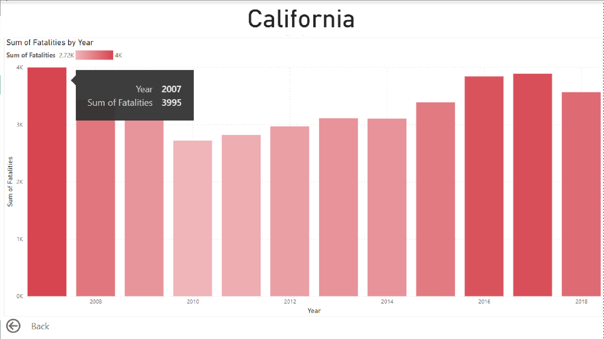
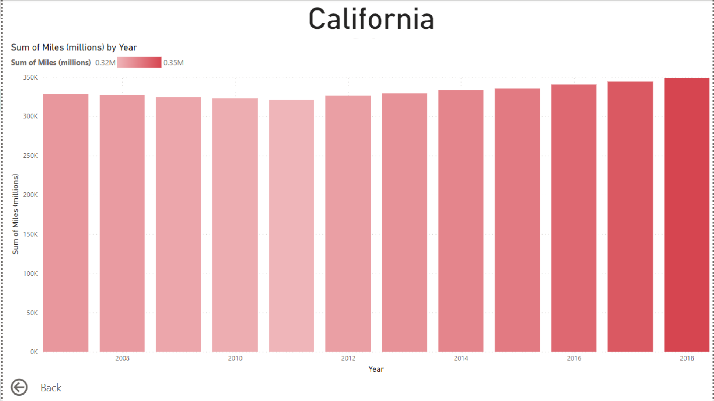
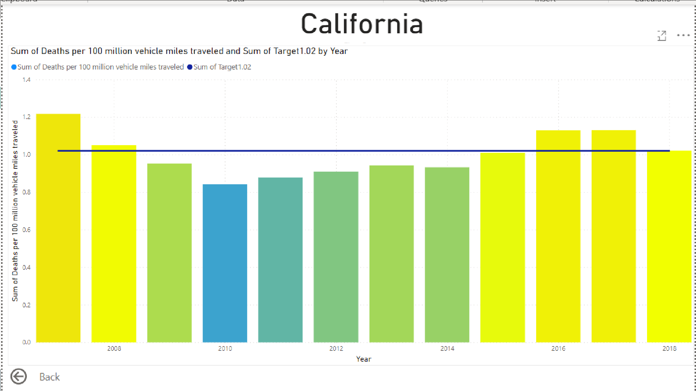

USA NHTSA Road Safe Analysis
The Statistics and the main issue
The number of people dying on America’s roads dropped by nearly 1,000 in 2018, according to newly released data from NHTSA. This marks the second consecutive year that motor vehicle fatalities declined. While the 2018 decrease was felt across many areas, pedestrian, bicyclist and large-truck occupant fatalities saw increases.
By the numbers
- 36,560 people were killed in traffic crashes in 2018, a 2.4% decrease from 2017
- 1,038 children (14 and younger) died, a more than 10% decline
- 9,378 speeding-related deaths, an almost 6% drop
- 4,985 motorcycle fatalities, an almost 5% decrease
- 6,283 pedestrians died, a more than 3% increase, and the most deaths since 1990
- 857 bicyclist deaths, a more than 6% increase
- 885 large-truck occupants died, an almost 1% increase
- The decrease in traffic deaths come as people drove even more. Estimated vehicle miles traveled increased by 0.3% from 2017 to 2018, while the fatality rate per 100 million VMT decreased by over 3%. This is the lowest fatality rate since 2014.
Over the past 40 years, there has been a general downward trend in traffic fatalities. Safety programs such as those increasing seat belt use and reducing impaired driving have substantially lowered the traffic fatalities. In 2018, drunk driving fatalities dropped about 4%, accounting for 29% of 2018 traffic deaths — the lowest percentage since 1982 when NHTSA started reporting alcohol data. Vehicle improvements such as air bags and electronic stability control have also contributed greatly to the reduction of traffic deaths on our roads. In 2018, there was about a 10% decrease from 2017 in passenger vehicle occupants killed in rollover crashes.
The data
I got the data from the NHTSA website from regarding the Miles driven,Deaths,Fatality Rate per year and state. so that later i could compare it to the Target that the USA has for their fatality rate.
The dashboard
Once i've ETL all the data and saved it in the .csv file (image you see above)
Then i started working on the main dashboard with the following questions in mind:
- What's the number of Deaths per 100 million vehicle miles traveled per state in 2018?
- How is the average of deaths per year doing against the target each state has? (yes as creepy as it might sound there is a target for that)
- Does driving more mean more deaths or are there any states where people dove more and had les fatalities?

In the image above we can see our Main Dashboard where we can visualize in a more user friendly way the answer to the main questions
We can find on our left side a gauge that measures the number of deaths per 100 million miles traveled. The gauge's color changes from blue -> yellow -> red depending on how high the number of deaths is, and we can also find a line that indicates the Target of fatalities, that way we can see how good or bad each state is doing.
A KPI for the fatalities per year, this KPI also is color oriented following the same color logic as the GAUGE but with the difference that this KPI reflects how good each state is doing against their own goal NOT THE NATIONAL GOAL of 100 million miles traveled.
An Area chart that compares the number of miles driven vs the number of deaths per year and state, The purple area represents the number of deaths by year and the blue area represents the number of miles driven (in millions)
Two cards where we can see the Number of miles driven from 2007 to 2018 and the Fatalities from 2007 to 2018
A filled map that shows the state selected and a Drop down menu where we can select the state we want to visualize
Drill Through the other pages
In order for us to have a more in depth view of each states i created three more pages with graphs regarding Fatalities, Miles Driven,Fatality RateSo in order for us to access those pages and visualize the data related to the state we have selected, we must right click on the colored state in the map and select "drill through"

And if we want to go back to the Main Dashboard we must click on the back button that's located on the bottom right hand side corner

Fatalities
This graphic represents the number of deaths per year. Here we can see that the year with more fatalities in California was 2017
and that in the two previous years to 2018 this number went up again after a big decrease in fatalities.

Miles Driven
This graphic represents the number of miles driven. Pretty much like the previous one we can
easily visualize the number of miles driven per year.

Fatality Rate
And lastly, we can see how this graphic gives us a better view on how good is each state doing
compared to the NATIONAL target from 2007 to 2018.
Here we can see how California is doing, relatively Ok when it comes to their fatality rate and that their worst years have been
2007 and 2017. This graph goes from blue to red according to how high their Fatality rate is Yellow being the middle color.

Conclusions
Just like the official NHTSA said, there is a correlation between the number of miles driven and the number of Fatalities, but that seems not to be the case in some states like California, Colorado and New Jersey.Why are these states doing "good" regarding that they drive more and have less fatalities, that we don't know yet; but it will be a good idea to take a look at what ever they are doing and use them as an example to keep the roads safe. Project's github repository https://github.com/DavidAceituno88/USA-ROAD-SAFETY-ANALYSIS-NHTSA